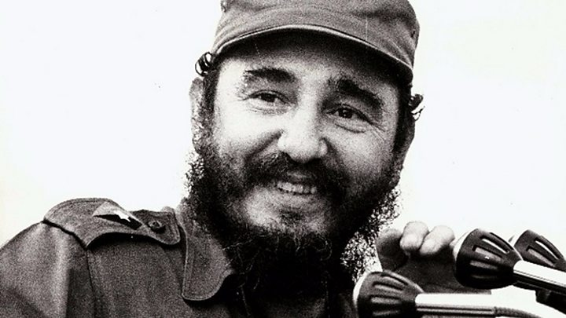
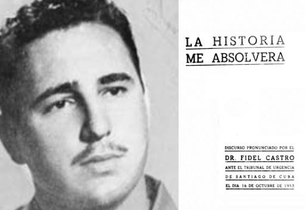
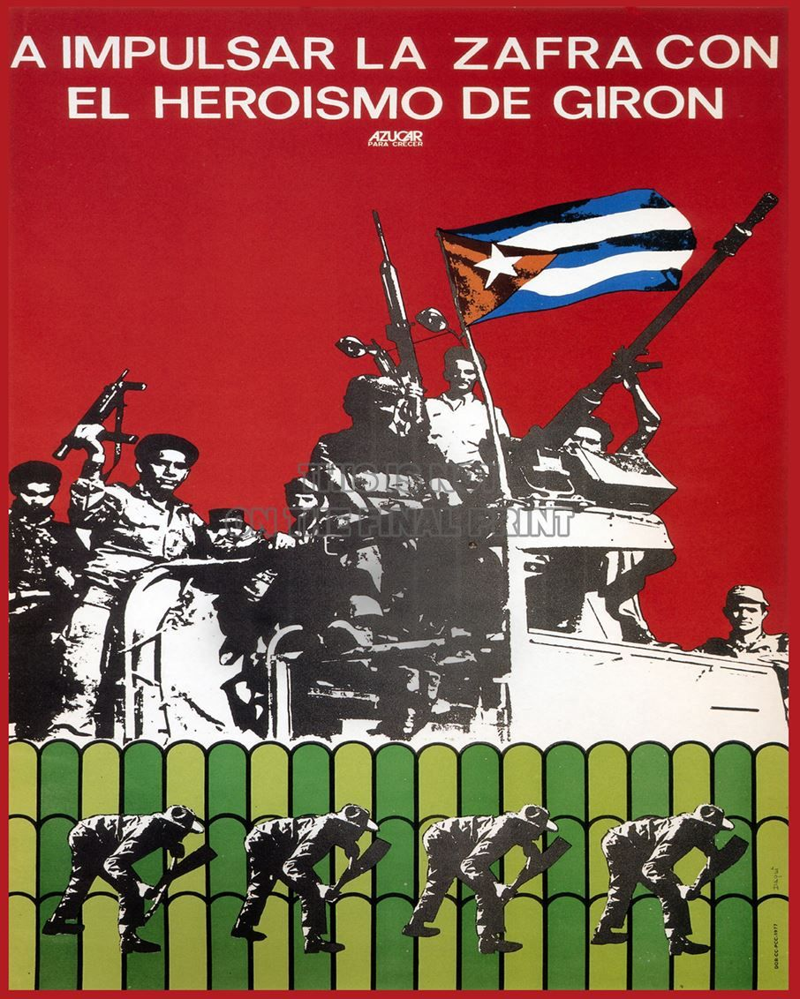
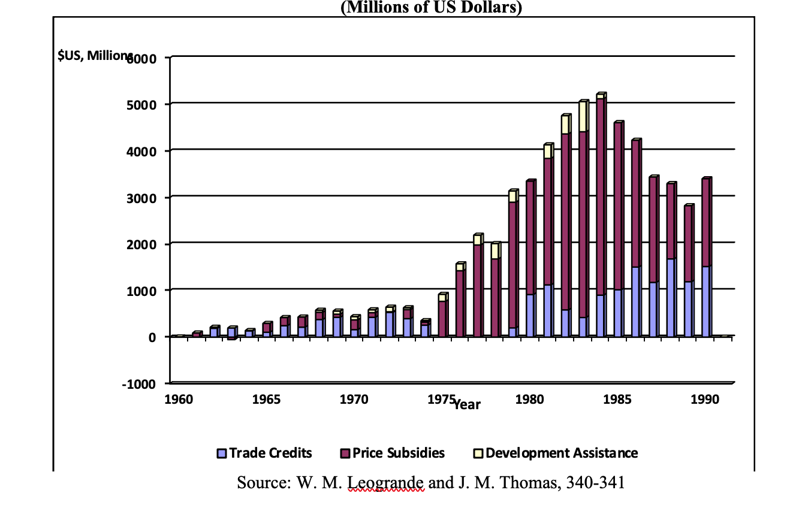
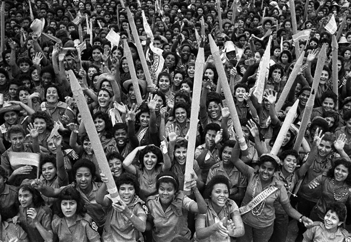
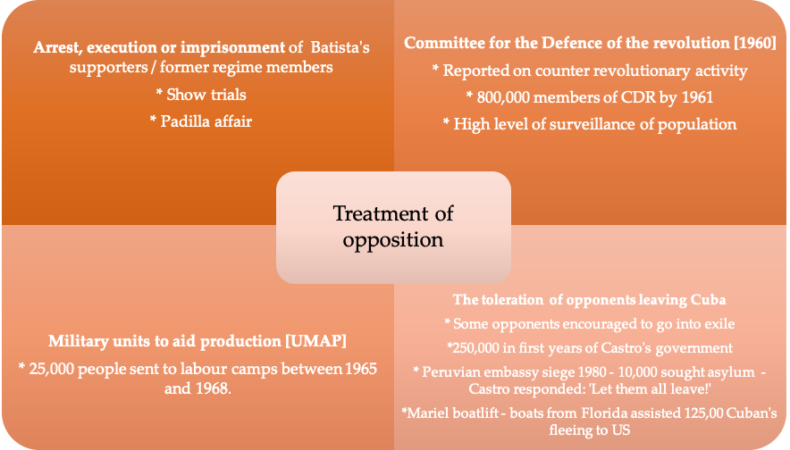

IB Docs (2) Team
IB Docs (2) Team

2. Rule of Fidel Castro

Castro had a clear agenda of bringing social justice to the people of Cuba, and his policies in education and health transformed the lives of ordinary people. More controversial were his economic policies, which brought about the hostility of both the middle classes and the US, and also his political policies which involved persecution, control and repression, and the establishment of a one party state.Guiding questions:
To what extent were Castro’s economic, political, cultural and social policies successful?
- How successful were Castro's economic policies?
- How successful were Castro's social policies?
- How successful were Castro's political policies?
- How successful were Castro's cultural policies?
What was the impact of the Cuban Revolution on the region?
How far was Castro a populist leader?
1. To what extent were Castro’s economic, political, cultural and social policies successful?

- return power to the people
- give land rights for those holding or squatting on smaller plots
- allow workers to have a 30 per cent share of profits
- allow sugar plantation workers to have a 55 per cent share of profits
- bring an end to corruption.
He also promised pensions, hospitals, public education, nationalization of utilities, and rent controls.
How successful were Castro's economic policies?
The economic aims of the revolution in the first few years were to reduce Cuba's dependence on sugar, diversify agricultural production, develop the industrial sector, attain full employment, improve living conditions and break the country's dependence on the US.
1. 1959 - 1962
The first action of Cuba's new government was to redistribute income to the rural and urban working class. In May 1959, Castro decreed The Law of Agrarian Reform which restricted the size of land holdings and gave the government the right to expropriate private holdings in excess of state limits; owners of the land received bonds in compensation. The government distributed the expropriated land in small plots of established cooperatives, which the Institute of Agrarian Reform (INRA) administered. Eighty-five percent of of all Cuban farms fell under the jurisdiction of the reform law because landownership had been so highly concentrated under the old regime. Note that this was to be followed by second Agrarian Law in 1963 under which thousands of medium-size farms were expropriated to prevent the existence of 'rich' peasants. State farms now became the dominant form of agriculture, controlling 70 per cent of the land and controlling the export of all major crops. The small farmers who remained were forced to sell their crops to the government at low cost.
Other reforms included
- an increase in wages
- the reduction of rents
- import taxes on luxury goods
- expropriation of American companies
- government take-over of the banking system
All of the above reforms were met with enthusiasm by the working classes which meant that Castro and the PSP became more popular and were able to consolidate their position. Wages grew by 40% in the first three years and overall purchasing power by 20 percent. Unemployment was virtually wiped out.
However the hostility among the middle and upper classes to these reforms meant that between January 1959 and October 1962, approximately 250,000 people left Cuba. The flight of specialised personnel and technicians meant future difficulties for further economic planning.
The United States was also alarmed and conflict between the two countries quickly escalated
Eisenhower suspended the import of Cuban sugar in 1960 and extended economic sanctions to a trade embargo on sugar, oil and weapons; this led to the Soviet Union stepping in to buy sugar. In 1961 Kennedy extended the terms of sanctions, and tension further escalated when Castro nationalised US oil refineries. The economic blockade form the US meant that spare parts from the US became a problem, especially in the sugar industry.
In addition:
- Cuba was excluded from the OAS [it had been a founding member]
- All OAS members bar Mexico cut trade and diplomatic ties with Cuba
- Kennedy worked to stop NATO members trading with Cuba
- Kennedy launched the Alliance for Progress – a program to aid Latin American development
- Operation Mongoose involved the CIA carrying out acts of sabotage against the Cuban economy.
These actions encouraged Castro to turn to the USSR to ensure Cuba’s economic survival.
For further discussion of the impact of Cuban policies on its relationship with the USSR and the USA and the development of the Cuban Missile Crisis, go to this page: 3. Theme 3 - Cold War Crises (ATL)
Other problems developed as a result of these early reforms. Farmers, forced to sell their products to the state at low prices, had little incentive to produce a surplus and so sugar production levels were low. In addition, with more money to spend, Cubans started eating more food. Cuba no longer imported consumer goods and food stuffs which further led to shortages; rationing began in March 1962.
Task One
ATL: Thinking skills
According to Calvocoressi, what economic problems did Cuba face by 1962?
The economic measures taken by [Castro's] government had, by its own admission, been ill conceived. A modish passion for industrialization led to the construction of factories for the manufacture in Cuba of articles which could be imported from abroad at less cost than the cost of the raw materials for their manufacture. In the countryside peasants displayed the worldwide dislike of their kind for co-operatives, the nationalization of land, and the enforced cultivation of crops destined for sale at fixed low prices. The middle class, which had been a more active ingredient in the revolution than the peasantry or the urban working class, became antagonized when nationalization was extended from foreign to domestic enterprises, and when the new regime took to the bad old ways of its predecessors in putting political opponents away in noisome jails. By 1962 there was an economic crisis, a general refusal to work by the peasants, food rationing and widespread disillusion, discontent and poverty.
World Politics Since 1945, Peter Calvocoressi, 1989
Task Two
ATL: Thinking skills
- Create a mind map to show the impact of economic reforms 1959 to 1962
- Discuss which groups in Cuban society would have benefitted from Castro’s reforms between 1959 and 1962 and how these reforms would have strengthened support for the regime.
- Which groups would not have benefitted and have been most like to leave Cuba as part of the exodus?
- Discuss the reasons for Castro allowing those opposed to his regime to leave Cuba.
- What might this exodus of certain groups mean for Cuban society under Castro?
- What would be the impact for Cuba of increased economic reliance on the USSR?
1963 to 1970
“We have cost the people too much in our process of learning. …The learning process of Revolutionaries in the field of economic construction is more difficult than we had imagined.”
(Castro, July 26, 1970)

The failure of the 'Instant industrialisation' strategy led to a reassessment of Cuba's economic realities and a new strategy was implemented.
From 1963, Castro decided to re-emphasise agriculture and return to intensive sugar production - while still continuing to diversify. This policy, it was hoped, would bring in the foreign exchange needed to help industrialisation and to allow for diversification of the economy.
In 1968, Castro launched the 'Revolutionary Offensive' that stressed the moral incentives to increase productivity; however it sought not only to increase production but also to create the 'new socialist man'. This was based on Guevara's argument that workers could be motivated without material incentives, to work for the common good.
Under the Revolutionary offensive Castro ordered the expropriation of all remaining privately owned enterprises such as family stores and restaurants; these were all to be owned and managed by the state. However, rather than increase productivity the offensive produced administrative chaos while the policy of moral incentives led to high levels of absenteeism.
To overcome these problems - and in addition hopefully make enough money to pay off debts to the Soviet Union - Castro announced that 1970 would be the 'Year of the Ten Million' and that Cuba would beat previous records by harvesting 10 million tons of sugar in 1970. This was also a political campaign, designed to show that the revolution could still achieve great things; it was thus also a political test for Castro who called it 'a liberation campaign' which was key for “defending the honor, the prestige, the safety and self-confidence of the country” (February 9, 1970.)
In order to achieve this ambitious goal of 10 million, Castro appealed for the 'militarisation' of labour - in other words that the cutting of the sugar would be organised along military lines with people from all walks of life cutting cane side by side. The military were also involved, occupying the sugar producing regions and running the sugar mills.
However, not only did the campaign fail to reach its ambitious goal, it also did extensive damage to the Cuban economy as a whole. To get as much as they harvested (8.5 million tonnes) the sugar industry was damaged making subsequent harvests generally poor. In addition resources and labour were taken from other sectors causing disruption and turmoil; not only sugar suffered but also forestry and fishing. The campaign had failed to raise morale and revolutionary fervour; if anything the opposite had been achieved with Cubans more sceptical and soldiers demoralised at being involved in a campaign of cane cutting (rather than fighting) that had failed. For Castro it was a blow to his political credibility.
Task One
ATL: Thinking skills
Read this article from the New York Times.
This article is an account of the speech that Castro gave in an address to the nation, 26 July 1970, following the failure of the 'Year of the Ten Million'.
- What problems caused by this campaign does Castro identify?
- What/who does Castro blame for the failures?
- What solutions does he put forward?
- With reference to origin, purpose and content analyze the value and limitations of this Source for a historian studying the 'Year of the Ten Million' campaign.
As you will have seen from the speech, Castro managed to survive politically by offering his resignation to the crowds who then refused to accept it. However the failure of the campaign necessitated a change in direction; Guevara's ideas of volunteerism and self-sacrifice which he had believed could motivate the Cuban nation had to be abandoned. The hope that the surplus sugar could be sold to provide money for economic diversification and for paying off the Soviet Union had to be abandoned; Cuba now had to accept a greater economic dependence on the Soviet Union.
Farmers markets were now reinstated and state-owned businesses given more autonomy. Material incentives such as bonuses were introduced and the government authorised private contracting for services such as plumbing repairs. These changes were popular. Provided workers met their obligations to their state enterprise employers, they could contract privately for work on evenings or weekends.
In addition, Cuba became even more tied into the Soviet economy:
- Castro went to Moscow to finalize a 15-year economic agreement with Brezhnev that gave Cuba even more subsidies, including an increase in price for sugar, deferment of debt, and $350 million of investment.
- Soviet advisers recommended the setting up of the System of Direction and Planning of the Economy, and the adoption of Cuba’s first ‘five-year plan’.
Task Two
ATL: Thinking skills
What is the message of the chart regarding Soviet aid to the Cuban economy? Use your knowledge of Cuban domestic and foreign policies to explain the fluctuations in aid given.
What were the implications for Cuba of this situation? (this is also dealt with in the video - see next task)

Soviet economic assistance to Cuba 1960-1990 (in millions of dollars)However, the end of the 1970s saw more economic problems. The global economic crisis of the 1970s meant that the Soviet Union reduced the amount it was paying for Cuban sugar. In 1980 there was an exodus of 125,000 Cubans to the US in 1980 - the Mariel Exodus. In 1986 Castro launched a 'Rectification Campaign' which once again sought to invoke moral incentives and voluntarism as the key force to rejuvenate the economy.
Task One
ATL: Thinking and self-management skills
1. Continue watching this video above from 1 hour 4.30 until 1 hour 10 minutes to recap the economic developments in Cuba from the late 1960s.
2. In pairs consider the extent to which Castro had brought about change in Cuba's economy between 1959 and 1980.
3. Refer back to Castro's original aims for the economy. To what extent had these been achieved?
In order to answer this you need to first identify the key characteristics of the Cuban economy in 1959 and then how far these had changed by 1980. Where can you identify change and where is there continuity? Do you think that the dependence on the USSR by 1980 indicates change or continuity in Cuba's economy?
How successful were Castro's social policies?
Starter
The following source comes from a 2002 World Bank report on Cuba's social services. In pairs identify the successes that are outlined regarding Cuba's progress in education and health since 1959.
Cuba has become internationally recognized for its achievements in the areas of education and health, with social service delivery outcomes that surpass most countries in the developing world and in some areas match first-world standards. Since the Cuban revolution in 1959, and the subsequent establishment of a communist one-party government, the country has created a social service system that guarantees universal access to education and health care provided by the state. This model has enabled Cuba to achieve near universal literacy, the eradication of certain diseases, widespread access to potable water and basic sanitation, and among the lowest infant mortality rates and longest life expectancies in the region. A review of Cuba’s social indicators reveals a pattern of almost continuous improvement from the 1960s through the end of the 1980s. Several major indices, such as life expectancy and infant mortality, continued to improve during the country’s economic crisis of the 1990s, although other areas, such as incidence of certain diseases and over-65 mortality, were negatively affected. Today, Cuba’s social performance is among the best in the developing world, as documented by numerous international sources including the World Health Organization, the United Nations Development Programme and other U.N. agencies, and the World Bank.
Education

From the very beginning the attack on illiteracy was viewed by the Cuban leadership as not simply a technical or pedagogical problem. It was seen as a profoundly political effort, one tied intimately to the revolutionary transformation of society and the economy.
Richard R. Fagen, The Transformation of Political Culture in Cuba (Stanford: Stanford University Press, 1969), p. 35
As you have seen, the Cuban revolution always promised equality and social justice. A key way of achieving this for Castro was through his education policies. Outside of Havana, Cuban illiteracy rates were very high. Thus 1961 was named the "year of education" and "literacy brigades" were sent out into the countryside to construct schools, train new educators, and teach the predominantly illiterate peasants to read and write. Cuba adopted the slogan: 'If you don't don't know, learn. If you know, teach'.
Task One
ATL: Thinking skills
According to the source below, why did Castro make education a key priority?
The lack of education is the best index of the state of political oppression, social backwardness, and exploitation in which a country finds itself. The indexes of economic exploitation and economic backwardness coincide exactly with the indexes of illiteracy and the lack of schools and universities. The countries that are more exploited economically and most oppressed politically are the countries that have the most illiterates .... Only a revolution is capable of totally changing the educational scene in a country, because it also totally changes the political scene, the economic scene, and the social scene.
Fidel Castro, Revolucion, Sept. 7, 1961
Task Two
ATL: Thinking skills
Watch the following video which contains first hand accounts of people who went out to rural areas to teach as part of the literacy campaign and discuss the following in pairs or as a class:
What were the characteristics of this campaign?
What factors helped make it a success?
What impact did the campaign have on the volunteers themselves? What do you think Castro's aims were in mobilising the middle class youth to take part in the campaign?
At the same time, vocational education for workers was introduced, and an extensive program for adult education encouraged everyone to achieve at least the level of secondary education. By the completion of the campaign, 707,212 adults had been taught to read and write, raising the national literacy rate to 96%.
Overall the initial education campaign was a great success and virtually wiped out illiteracy in Cuba in a few years. It also served to socialise many Cubans in the cities and the countryside into the new values of the Revolution. By the mid-80s, all children of primary school age attended school and only 2% of the population were illiterate.
Health
As with education, healthcare was a priority for Castro's government. The principle of free health care was seen as an essential measure and was implemented immediately. Che Guevara outlined the aims for Cuban healthcare in an essay, On Revolutionary Medicine: "The work that today is entrusted to the Ministry of Health and similar organizations is to provide public health services for the greatest possible number of persons, institute a program of preventive medicine, and orient the public to the performance of hygienic practices."
These goals were to prove challenging. Before the revolution Cuba had 6,000 doctors; of these 74% worked in Havana where the wealthy lived. After the revolution, more than half of Cuba's doctors went abroad; however as with the literacy campaign there was a vigorous mobilisation of the population. The government enlisted 750 physicians and medical students to work in the mountains and coastal communities where there was little or no access to medical services. This Rural Medical Service - el servicio médico rural had as its aim to 'provide disease prevention and to revitalize health services for those most in need, whether because they are poor, in precarious health or live far from urban centres”. Another key feature of the Cuban health system has been the multi-speciality polyclinics which were established in the 1970s.
In 1976, Cuba's healthcare program was enshrined in Article 50 of the revised Cuban constitution.
As with literacy, the campaigns to improve health were a success. the infant mortality rate dropped from 60 per thousand of live births in 1958 to 13.3 in the mid 80s. Whereas on the eve of the revolution there was only one doctor for every 5000 Cubans, the ratio had fallen some thirty years later to one per 400. Life expectancy rose from 57 to 74.
Housing and facilities
Cheap new housing was provided. State funds were ploughed particularly into rural areas to provide basic facilities such as running water and electricity. As a result small rural towns of between 500 and 2000 inhabitants endowed with running water, electricity, clinics and schools emerged in the countryside.
Women
The day must come when we have a Party of men and women, and a leadership of men and women, and a State of men and women, and a Government of men and women.
Fidel Castro
In the years between Cuban independence and the revolution, feminist groups and activists had achieved advances in the battle for equality; women achieved the vote in 1934 and the 1940 constitution enshrined their equality in law. However, despite having many rights on paper, Cuban society remained patriarchal; women still faced discrimination in the work place and for the most part a woman's place was considered to be in the home. Within Cuban society 'machismo' pervaded the culture.
Women played a role in the revolution of 1959 and following the revolution Castro and Vilma Espin—a chemical engineer, feminist, and leader of the revolutionary movement in the eastern provinces—founded The Federation of Cuban Women (FMC) to advance women’s rights, gender equalization, and reproductive health rights. Its main goals were to incorporate women into the work force and to promote their participation in the process of social and economic change, and it played a key role in literacy crusades and teaching vocational skills.
Indeed, Castro needed women to become an active part of the workforce in order to achieve his economic goals; new legislation was passed to ensure that women could access all jobs including those in areas such as construction and IT which had previously been dominated by men; child-care facilities were established to enable more women to join the workforce. Many women joined the Agricultural Legions, working in the fields and others became involved in political life.
The Family Code of 1975 established in law the equality of women
- economically: 'salaries, wages, pensions and other income obtained by husband and wife during marriage belongs to both'
- in the home: 'both parties must care for the families they have created. They must participate in the running of the home..'
- in divorce
Nevertheless, despite the expectation expressed in Article 44 of the Cuban Constitution (1976) stating that, “The state guarantees women the same opportunities and possibilities as men in order to achieve women’s full participation in the development of the country”, it seemed that by 1980 there had not been substantial progress towards a genuine change in women's status in society:
- the expectation that women still did all the housework and care of children remained and so women found themselves working a 'double shift'. Ultimately many women had to give up work.
- women faced discrimination in the workplace and the numbers of women in the workforce remained lower than the government would have wanted.
- Only 13.2% of the membership of the Communist Party were women
- In the new assemblies introduced in 1976, the percentage of women was extremely low. Castro commented that 'The result demonstrates just how women still suffer from discrimination and inequality ....and how in the corners of our consciousness live on old habits of the past.'
Task One
ATL: Thinking and research skills
In groups investigate the role played by women in the Cuban Revolution and the impact of Castro’s victory on the role of women in Cuban society, researching further the points outlined above.
You should create an exhibition on your research entitled:
‘The impact of the Cuban revolution on women’
Your exhibition must include an assessment on the extent women’s position in society changed. For example, your group should note the absence of women in powerful political positions and the problem of reconciling government aims for women versus the traditional expectations placed on them.
Click on the eye for points that you should consider including:
Minorities and religious groups
Afro-Cubans
Afro-Cubans made up approximately 50% of the Cuban population and had faced discrimination in all walks of life before the revolution. Castro believed that such overt racism was in direct conflict with his commitment to social justice and equality and passed policies to desegregate beaches, parks, work sites and social clubs. He outlawed all forms of legal and overt discrimination, including discrimination in employment and education. In addition the economic and social reforms had a positive impact on the majority of Afro-Cubans who were the lowest on the social scale. Access to housing, education and health services improved dramatically as did the representation of Afro-Cubans in a range of professions.
Three years into his rule, Fidel Castro declared that the Revolution had eliminated racism, making any further discussion of racial inequalities a taboo subject. However, many argue that racism continued to exist and that, for example, educational policy and official culture remained strongly Euro-centric. Afro-Cubans also had only limited representation in the higher levels of the Communist Party – or civil service or state industries. Thus it could be argued that racism had not been elimintated - but any attempts by intellectuals to raise the issue of racism were dealt with harshly and issues were pushed underground.
Catholic religion
The state’s relationship with the Catholic church was initially hostile. Early on some sectors of the Catholic Church welcomed the revolution as a chance to carry out social justice; however others in the Church viewed the revolution with suspicion particularly when Castro openly declared himself to be a Marxist-Leninist and nationalised schools thus removing all religious influence.
Castro meanwhile viewed Catholicism as representing foreign interests and would not allow bishops to get involved in political or social commentary. In fact Cuba officially embraced atheism; practising Catholics and other believers were viewed with suspicion and not allowed to join the Communist Party. The 1976 constitution made it clear that:
It is illegal and punishable by law to oppose one’s faith or religious belief to the Revolution, to education or to the fulfillment of the duty to work, defend the country with arms, show reverence for its symbols and fulfill other duties established by the Constitution
However, with the end of the Cold War, this situation changed and in 1998 the Pope, John Paul II visited Cuba; the constitution was amended and people allowed to join the Catholic church. The separation of church and state, however, continued.
Task One
ATL: Thinking and communication skills
In pairs consider the following question:
To what extent was Cuba more successful in social rather than economic policies?
How successful were Castro's cultural policies?
Castro's cultural policies were designed to eliminate foreign influence and re-establish and emphasise nationalist and revolutionary values.
Task One
ATL: Research and communication skills
- In groups research different aspects of Cuban culture; you could divide up the task so you focus on different areas and then present back to the rest of the group on your findings.
- Consider as a group if you believe that Castro's policies were successful in promoting culture to ordinary Cubans and also if he achieved his aim of using culture to promote Cuban nationalism and revolutionary values. To what extent were the arts impacted by censorship?
Visual arts
Film, television and radio
Cuban Institute of Arts and Cinema
National Ballet
Writers and intellectuals; First Congress of Cuban Writers and Artists
The Padilla affair
You will find these pages useful as a starting point:
Education and art for all: Castro’s cultural legacy
Cuba, Castro, the arts and freedom
And also this podcast:
BBC World Service - The Cultural Frontline, Fidel Castro's Cultural Legacy (BBC)
How arts and culture fared under his rule, and how artists have reacted to his death.
How successful were Castro's political policies?
Starter: Read the information in the grid below regarding the treatment of opposition by Castro. In what ways did these actions help Castro to consolidate and maintain his power?

Following the revolution, Castro and his close supporters decided that democracy was inappropriate for Cuba at that time and The Fundamental Law for the Republic, 1959, concentrated legislative power in the executive. The provisional government established at that time included a significant number of liberals who hoped to be able to dominate the more left-wing members, and the government was led by moderates; Manuel Urrantia as President and José Miró Cardona as Prime Minister.
Nevertheless, it was Castro who dominated the government and the ruling party; when Prime Minister Cardona unexpectedly resigned after six weeks, Castro took over as Prime Minister and later, he took the role of first secretary of the Communist Party. He was also highly visible as a leader, talking on a daily basis directly with Cubans - either through speeches or via walk-abouts. Within 18 months, the new regime had suppressed the right of free press and conducted public trials of former Batistianos, a number of whom were executed (see diagram above).
Having established personal control, Castro moved the revolution to the left in order to broaden his political support and accomplish his economic goals of land reform and income redistribution. These radical economic measures along with the concentration of political power in the hands of the more left-wing rebels of the July 26th movement alienated middle -class supporters like President Manuel Urrutia who resigned in July 1959. In October, Major Huber Matos, one of the leading military commanders of the revolution and also an anti-communist was charged with treason and imprisoned highlighting the split between moderates and radicals.
At the same time, Castro moved towards an alliance with the Popular Socialist (Communist) Party. The PSP now became part of the new political party established by Castro - the Integrated Revolutionary Organisation (ORI) which also included the 26th July movement and the Revolutionary Directorate, a revolutionary student movement.
In 1962 the ORI became the United Party of the Socialist Revolution of Cuba (Partido Unido de la Revolucion Socialista de Cuba) under Castro. In 1965 it was renamed the Cuban Communist Party (Partido Comunista Cubano, PCC) and it was this party which now became the only legal political party in Cuba and thus was able to remain in power until the present day.
Note that Castro only began to call the revolution ‘socialist’ following US air raids on Cuba on 16 April 1961, in the prelude to the Bay of Pigs invasion. It could be argued that in order to get Soviet military support and commitment to the Cuban revolution, Castro aligned himself ideologically to the USSR. Indeed, from the time of the Bay of Pigs he openly claimed that he had always been a Marxist. The tangible US threat meant Castro could utilize the ‘siege’ conditions to consolidate his political control.
See this page for more discussion on how the Cold War influenced Castro's policies: 2. Nations affected by Cold War tensions: Cuba
Task One
ATL: Thinking and self-management skills
- Review the information above regarding political, economic and social reforms. What measures did Castro use to consolidate his power in Cuba between 1959 and 1962?
- How did the Bay of Pigs and the Cuban Missile Crisis further consolidate Castro's position?
For the second question, you can find out more on the Bay of Pigs invasion here: 2. Nations affected by Cold War tensions: Cuba and more on the Cuban Missile Crisis here: 3. Theme 3 - Cold War Crises (ATL)
Task Two
ATL: Thinking skills
Go to the Castro page for Paper 2 Topic 10: Case Study Topic 10: Castro (ATL) and complete the tasks under the headings Use of Propaganda and Use of ideology to further you understanding of methods used by Castro to maintain political support.
In 1976 Cuba's first socialist constitution was approved by a nationwide referendum. The constitution was an attempt to make government more responsive to the people and provided for a pyramid of elected bodies. At the bottom were popularly elected members of municipal assemblies, who elected delegates to provincial assemblies and to the National Assembly of People's Power. However only the PCC was allowed to campaign and all nominees to elections at any level had to be chosen by the party. In fact Castro remained the dominant force in the government as the First Secretary General of the Communist party, head of Government, and president of the Council of State.
Thus although the 1976 constitution was intended to decentralise power and to give ordinary people more say, in fact there was little practical change to the political system.
Task Three
ATL: Thinking skills
Read the Preamble to the 1976 constitution which can be found here
Discuss in pairs the language used and how this constitution is used to further consolidate the power of Castro and the revolution.
4. What was the impact of the Cuban Revolution on the region?
"Our revolution is endangering all American possessions in Latin America. We are telling these countries to make their own revolution.” — Che Guevara, October 1962
ATL: Thinking and research skills
The Cuban Revolution was the Inspiration for guerrilla insurgencies and anti-imperialist movements across Latin America. In groups research the impact of the following events, relations and interventions in Latin America after 1959:
- Relations with the US. Impact of the Bay of Pigs invasion 1961 and the Cuban Missile Crisis 1962 in Latin America (also see 2. Nations affected by Cold War tensions: Cuba and 3. Theme 3 - Cold War Crises (ATL) )
- Growth in Soviet influence in Latin America due to relationship with Cuba
- Cuban involvement in and leadership of the Non- Aligned Movement from 1964
- The Tricontinental Congress 1966 and the Organization of Solidarity with the People of Asia, Africa and Latin America
- Cuban interventions in Bolivia 1966 - 67 and the 'Year of the Heroic Guerilla Fighter, 1968'
- Cuban-Chilean relations 1970 to 1973. Aid military training, state visit of Castro
- Cuban relations with Canada in the 1970s and 1980s
- Grenada and Nicaragua from 1979
- Venezuela from 1998
Your group should attempt to find speeches, propaganda, newspaper reports and different historians perspectives regarding the impact of the Cuban Revolution on the region.
After completing your investigations you should produce a short documentary on the ‘Impact of the Cuban Revolution on the Americas region.’ This should cover the key events, shifting relationships and different contemporary opinion as well as relevant and more recent historiography
6. How far was Castro a populist leader?
Castro can be considered a populist leader in certain aspects - and certainly at the start of his rule.
Research the definition of populism or refer to the definition of populism which can be found at the start of this page: 3. Populist leader: Getúlio Vargas.
In pairs brainstorm which aspects of Castro's rule can be considered populist.
In what ways would you argue that it wasn't populist?
 Twitter
Twitter
 Facebook
Facebook
 LinkedIn
LinkedIn